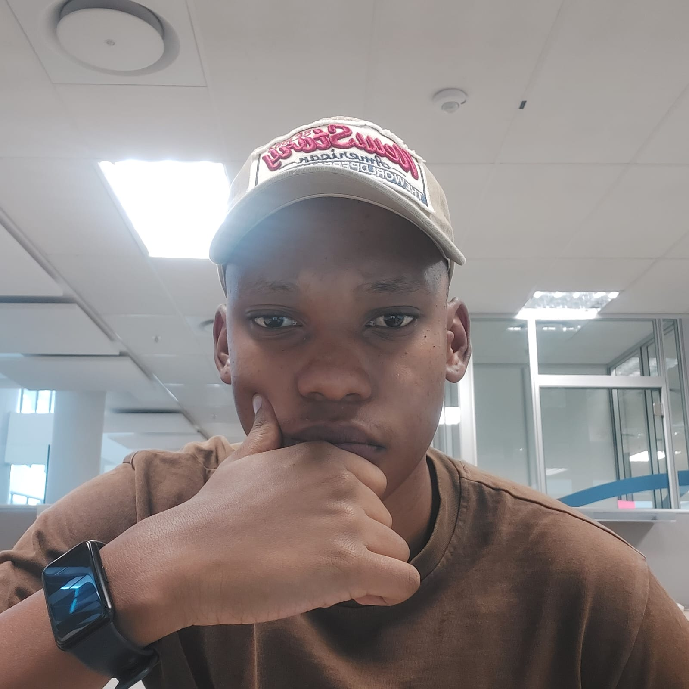

My Work
These are a few of my DOM projects
Computer Engineer
As an experienced Software Developer, I specialize in building dynamic and responsive web applications using React and React Native. My skills extend to developing mobile applications, ensuring seamless user experiences across different devices. I am proficient in using Firebase, MongoDB, and Prisma to create robust backends, and Postman for API testing and integration.
With a strong foundation in DevOps, I bring expertise in automating and optimizing development processes. I have experience with CI/CD pipelines, containerization, and orchestration tools that ensure efficient and reliable software delivery. My commitment includes streamlining workflows, enhancing collaboration, and reducing deployment times to accelerate project timelines.
I also have experience in system administration, managing and maintaining IT infrastructure to ensure optimal performance and security. My skills include server setup, network configuration, and troubleshooting to support the seamless operation of IT systems. I am dedicated to implementing best practices and proactive measures to maintain system integrity and reliability.
Computer Engineer based in Gauteng
Hi, I'm Brendan Muofhe. A Computer Systems Engineering graduate from Tshwane University of Technology (TUT). I currently work at Telkom, where my journey began as a System Administrator.
In my current role, I leverage my expertise as a certified Automation Engineer, specializing in streamlining and optimizing processes using cutting-edge technologies. My certification in RPA (Robotic Process Automation) and successful completion of the RPA exam with UiPath empowers me to design and implement efficient automation solutions that drive innovation and efficiency.
My background encompasses a diverse skill set including web and mobile development with React and React Native, backend development using Firebase, MongoDB, and Prisma, and API testing with Postman. I am also adept at DevOps, employing tools like Jenkins and Docker to enhance continuous integration and delivery.
Beyond technical development, I have hands-on experience in system administration, ensuring optimal performance and security of IT infrastructure. My holistic approach to technology enables me to maintain system integrity while providing top-notch product support.
I thrive on challenges and continuously seek to expand my knowledge and adapt to new technologies. This curiosity and commitment to learning keep me at the forefront of the tech landscape, allowing me to deliver cutting-edge solutions that meet and exceed business goals.
Known for my collaborative spirit and effective communication, I excel in dynamic environments and cross-functional teams. Join me on this exciting journey as I continue to push boundaries, explore new technologies, and deliver impactful solutions that make a difference.

Wolraad Woltemade Primary School, situated in Cape Town, played a pivotal role in shaping my foundational principles and honing my communication skills. My time here provided a typical yet essential primary school experience.
Lenz Public High School holds a special place in my academic journey, where I cultivated a profound love and passion for mathematics and physical sciences. Spending five formative years here, my dedication and hard work were reflected in my achievements. At the culmination of my high school years, I proudly earned the distinction of being the second-best student in Pure Maths, earning me the qualification to pursue a Bachelor's Degree.
As one of the top fifteen science, technology, and engineering universities in South Africa, Tshwane University of Technology (TUT) has been a crucial part of my educational journey. Studying Computer Systems Engineering (CSE) at TUT provided me with a wealth of quality information in the field of Computer Science. I am proud of my academic endeavors at TUT and look forward to continuing my educational pursuits within this esteemed institution.
Currently, I contribute to Telkom's success through my role in product support.
These are a few of my DOM projects

On this project I created an avarage restaurant Menu.

This project is filled with corny dad jokes that will surely make you question everything.

On this project I created a count-down timer for an old phone give away. First come, first serve. Hurry up before someone beats you to it.

Here is a range of high quality products for sale. This project is almost like the Menu project but not really.

Are you tired of forgetting your grocery list? Worry less, I got your back. Here is a project made to solve that problem.

This is a Wikipedia project.

This is actually my very first javascript project. It is actually very fun for the first 5 seconds. LMAO

Bottoms up!

Pause and play this video project as many times as your heart desires.